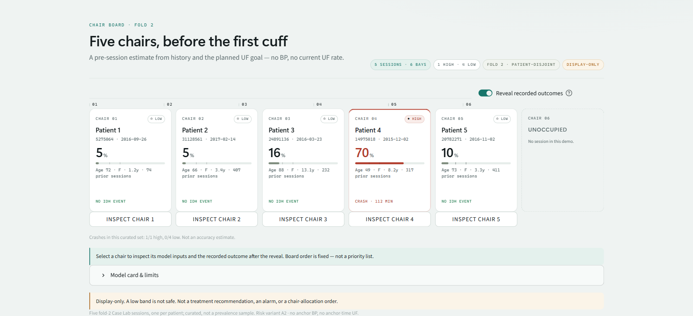
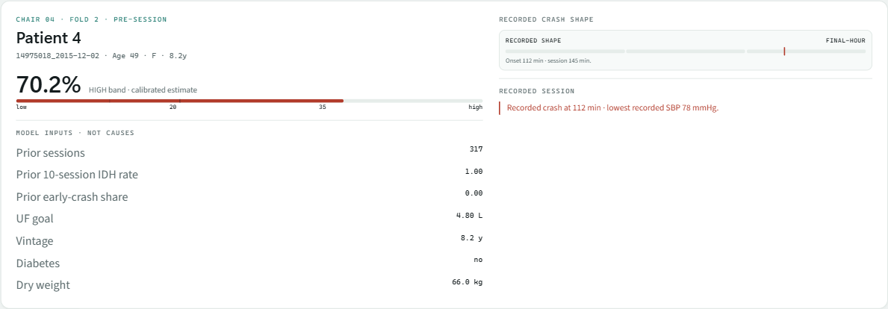
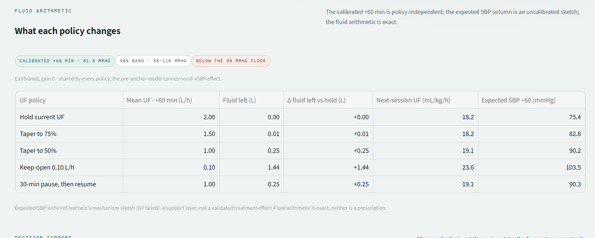
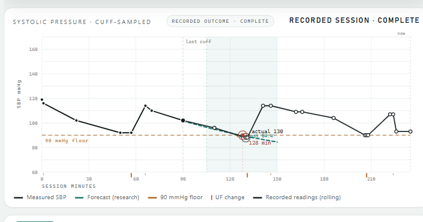

Happiest Health Digital Twin Challenge 2026 · Finals
See the drop before it lands.
A chair-side digital twin for dialysis.
Reimagining and Reforming Healthcare in India Summit Bengaluru · 20 November 2026
Research prototype. Not a medical device. No treatment-effect, alert-utility, or outcome claim.
The problem
The crash hides between two cuffs.
In one in ten sessions, systolic pressure falls below 90 mmHg. The drop starts before the next reading — and the decision lands on the technician at the chair.
1 in 10
sessions in our cohort fall below 90 mmHg. The dangerous gap is not the number; it is the time between readings.
“The doctor is remote. The person at the chair has minutes.”
HEMOBP cohort, Taiwan · 205,482 sessions · 10.4% with nadir <90 mmHg
One session · cuff-sampled
HemoTwin · Research prototype · Not a medical device
02 / 11
The ground reality
The bottleneck is attention, not machines.
34M
dialysis sessions a year in India
Estimate · label it as an estimate
13,800
dialysis machines across 751 PMNDP districts
1,856–1,925 centres
1–1.5
nephrologists per million people
vs ~25 per million in high-income systems
Current deal at the chair
Alarms fire after the number falls. The technician is already reacting, not preparing.
Dashboards document; they do not decide. The state lives in the machine, the chart and a phone call.
Staff already taper UF in 87.2% of sessions. Without a shared plan, the fluid moves to the next session.
Sources: PMNDP; HEMOBP cohort; FACTS.md. 34M is an estimate. 87.2% = sessions with a >20% mid-session UF reduction.
HemoTwin · Research prototype · Not a medical device
03 / 11
Why a twin
A number is not a plan.
A score ends at a prediction. A twin carries the session state to the decision.
Mirror
Cuffs, ultrafiltration, history, symptoms. One patient-specific state, updated at the chair.
Forecast
The next 60 minutes, with a 90% band. Refreshed at every cuff — and withheld when the data is stale.
Price the trade-off
Every UF option in litres left today and UF carried into the next session. Arithmetic, not a prescription.
Before the first cuff
Risk band from history and the planned UF goal.
During the session
A calibrated +60 min forecast, refreshed at every cuff.
At the decision
The fluid arithmetic behind each UF option.
“The twin does not choose. It makes the choice legible.”
HemoTwin · Research prototype · Not a medical device
04 / 11
Before the first cuff
Five chairs. One is different.

Chair board · revealed after the pre-session estimate
Chair 04 · the one to watch

112 min
recorded crash
78
mmHg nadir
1.00
prior IDH rate
No BP taken. No current UF. History, static fields and the planned UF goal alone — computed before the first cuff.
Curated five-chair story · not an accuracy estimate · low band is not safe
“The high chair crashed. The four low chairs did not.”
HemoTwin · Research prototype · Not a medical device
05 / 11
At the decision
Every option has a price.
The forecast is shared across policies. What changes is the fluid arithmetic.

Fluid arithmetic · all policies share the same calibrated +60 min
Hold current UF
0.00 L left today
Next-session UF 18.2 mL/kg/h
Taper to 50%
0.25 L left today
Next-session UF 19.1 mL/kg/h
Keep open · 0.10 L/h
1.44 L left today
Next-session UF 23.6 mL/kg/h
“Stop the UF and the fluid does not disappear. It moves to the next session.”
Expected SBP is an uncalibrated sketch; the fluid arithmetic is exact. Neither is a prescription.
HemoTwin · Research prototype · Not a medical device
06 / 11
Prediction, then the record
Two minutes ahead of the first low.

Recorded session · forecast drawn first, then the cuffs
Dashed line = 90 mmHg floor · teal = research forecast · black = recorded cuffs · amber ticks = UF changes.
128 min
forecast crossed 90
130 min
first measured low
88 mmHg
actual low
84.4 mmHg
forecast low
The forecast crossed 90 two minutes before the first measured low.
Retrospective replay. The forecast is observational; it is not an alert and did not trigger one. The scene is a synthetic illustration; the readings are recorded.
HemoTwin · Research prototype · Not a medical device
07 / 11
The boundary
The twin knows what it cannot do.
We claim
A calibrated next-hour forecast. 10.99 mmHg average miss on patients never seen in training.
A pre-session risk band. AUROC 0.83 from history and the planned UF goal; no BP needed.
Exact fluid arithmetic and a review pathway. Nothing adjusts the machine.
We refuse to claim
A what-if treatment effect. We tested it; it failed. The counterfactual is retired.
Alert utility or fewer crashes. No outcome data; the event model is shadow-only.
Indian or external validation. No Indian cohort; the Spanish transport check failed at 0.474.
The test we ran
Does less ultrafiltration raise pressure?
+0.13 mmHg per 0.25 L/h less UF · 95% CI −2.63 to +3.06. The interval crosses zero. We retired the what-if.
Seven pre-registered checks. The twin test failed; the forecast and risk surfaces remain. A pass is an engineering check, not clinical validation.
HemoTwin · Research prototype · Not a medical device
08 / 11
Impact & integration
From one chair to one unit.
Impact we can measure
Time-to-review. How long before a falling session is escalated.
Shared state. One screen for the technician and the remote doctor.
Fluid carry-forward. Every UF choice logged against the next session.
How it fits
Device-agnostic. Manual entry or CSV today; no machine integration.
FHIR R4 export. ABDM path; DPDP-aware local deployment.
No runtime network. A stale cuff withholds the projection instead of guessing.
Next step
One unit. 2–4 weeks. Silent mode: no machine control, no alarms.
Local recalibration. Indian labels, local cuff cadence, local practice.
Not directly comparable. Zhang and Hong are intra-session, different horizons and cohorts. Our 0.831 asks a harder question: no BP, no current UF. No published MAE comparator for the forecast; the retired v3 twin scored 15.6 on the same taper slice (n=374).
HemoTwin · Research prototype · Not a medical device
10 / 11
What drives them
What the models actually read.
Pre-session risk · A2
29 fields + 20 missingness flags · no BP · no current UF
Prior 10-session IDH rate
20.6%
Prior 3-session mean nadir
15.7%
Prior 10-session mean nadir
10.3%
Prior session nadir
6.0%
Dialysis vintage
3.0%
Planned UF goal
2.8%
60-minute forecast · v4.1
59 pre-anchor fields · no future-UF oracle
Internal session projection *
47.4%
Recent SBP minimum · 30 min
12.0%
Recent SBP minimum · 60 min
4.9%
Prior 3-session mean nadir
4.2%
Prior 10-session mean nadir
3.8%
Patient BP sensitivity
3.4%
Associations, not causes. Planned UF goal encodes clinician behaviour; BP sensitivity is not an intervention effect. *Internal projection is a model input — not evidence the counterfactual works.
5 pass or partial · 2 fail. No alert authority · no Indian validation · no clinical-benefit claim.
The model is not a black box: every input is named, and every boundary is printed.
The twin knows what it cannot do. That is what makes it safe to try.